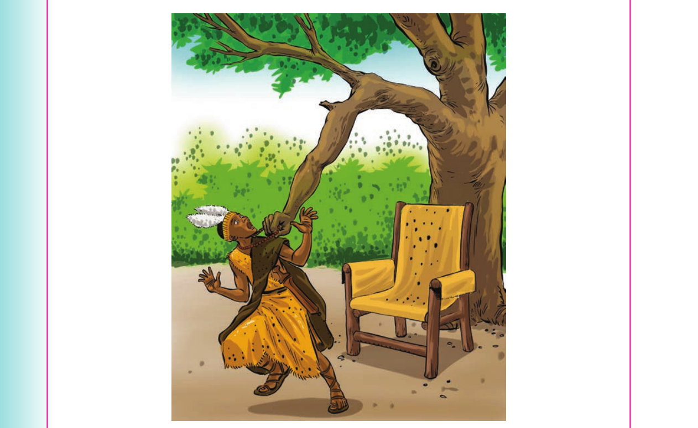

The magic tree - continued
he heard a strange voice. “You must be good to your people”. He looked around in surprise and fear. He did not see anyone. Then, he heard the voice again, “You must be good to your people”. He hurriedly stood up ready to leave. One of the branches of the tree turned into a big hand. The hand caught the king’s necklace and held it tightly.

He screamed for help. The queen was the first to arrive. Then, other people followed. The king told them what had happened to him. But the people did not see the hand. Then, the king promised to be good to his people. He also promised to be a hard-working king. From that day, the king changed his behaviour completely. That tree has been called the magic tree ever since.